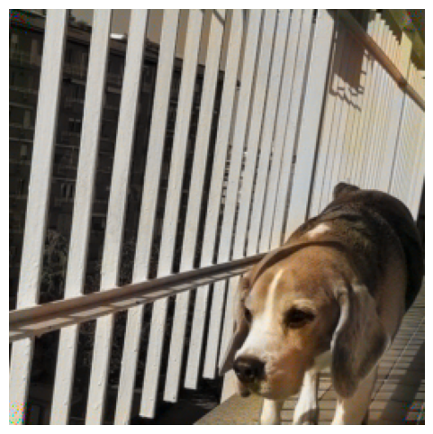

Neural Response Identification
Modeling neuron encoding of visual stimuli in the anteromedial visual area of mice.
Modeling neuron encoding of visual stimuli in the anteromedial visual area of mice.

Analysis and construction of Deep Learning models that colorize black-and-white images.
Thesis project that analyzes the power scaling laws exhibited by complex models.

Group project aimed at analyzing data related to cancer cells and their growth patterns next to blood vessels. Investigation on the possibility to predict the state of a cell (hypoxia or normoxia) and determine its potential danger by studying the mechanisms the cells develop to survive and resist treatments.

Classification of data with a Random Forest. Determining whether applying PCA to the dataset is useful, and if so what number of components it is optimal to use.

Sort a set of images applying the so-called Earth Mover's Distance algorithm.

Schedule the baking of a set of pastries in order to optimize the efficiency of a pastry shop and to not leave any customers wait for their purchase.

Program a car's battery in order to minimize waste.

Statistical investigation on the main environmental and socio-economical factors of depression worldwide.